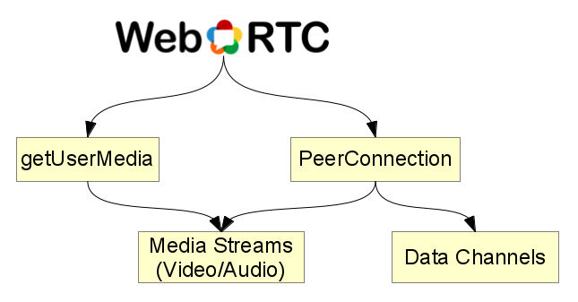

Introduction to WebRTC
Jan Lelis (@janlelis) | Paris to Berlin Hackathon | October 18, 2013
The palava.tv webrtc project
Free browser-to-browser video communication
We are open sourcing our stack: github.com/palavatv

Upcoming Standard
Internet Engineering Task Force
World Wide Web Consortium
The idea behing WebRTC
Brings real-time communications to the web!
Already supported in Chromes & Firefoxes out there -- pluginfree
Theoretical endpoints: Uncountable!
WebRTC for Web Developers
JavaScript API: getUserMedia
getUserMedia
<video id="gum-video" autoplay="autoplay">
<script>
navigator.webkitGetUserMedia(
{video: true, audio: false},
function(stream) {
document.getElementById('gum-video').src =
webkitURL.createObjectURL(stream);
}
);
</script>
WebRTC Signaling Concept
Developer implements how to establish a PeerConnection
External Signaling Channel

Find Peers

Exchange Media Capbilities

"Hole Punching"

Success!

Example Signaling Servers
palava-machine (ruby)
signalmaster (node.js)
webrtc.io (node.js)
together.js hub (node.js)
peerjs server (node.js)
Signaling as a Service:signaling.io
We are working on a webrtc signaling service. You might want to check it out if you consider using webrtc in a future project.
JavaScript API: PeerConnection
Prepare PeerConnection
// already got localStream via getUserMedia
var pc = new webkitRTCPeerConnection(
{iceServers: [{url: "stun:93.186.193.18"}]},
{optional: [{DtlsSrtpKeyAgreement: true}]}
);
pc.addStream(localStream);
pc.onaddstream = function(event) {
console.log("adding remote stream");
$('#video-tag')[0].src =
webkitURL.createObjectURL(event.stream);
};
Establish PeerConnection
// connect to signaling provider
var server = new WebSocket('wss:palava.tv:4233');
// ...
pc.createOffer(function(sdp) {
// register local sdp in our new connection
pc.setLocalDescription(sdp);
// send the "sdp" to other peer
server.send(JSON.stringify({peer_id: 42, event: 'offer', sdp: sdp}));
// ...
// other peer receives 'offer' and sends an 'answer' via server
server.onmessage = function(msg) {
payload = JSON.parse(msg.data);
if(payload.event === 'answer') {
pc.setRemoteDescription(
new RTCSessionDescription(payload.sdp)
);
// exchange ice candidates... when finished:
// pc.onaddstream callback will be called by WebRTC
Why use WebRTC?
Allows for a new generation of real-time applications
Provides a simple JavaScript APIs for doing so
It is a standard:
It is designed to be compatible with the rest of the world
Thank you | Have fun at the hackathon
blog.palava.tv | twitter.com/palavatv | github.com/palavatv
Feel free to contact me for questions @janlelis | jan@signaling.io